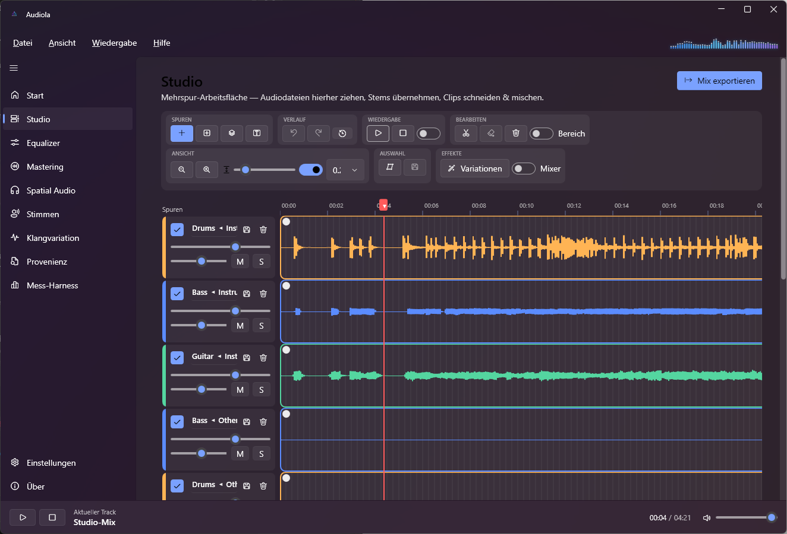
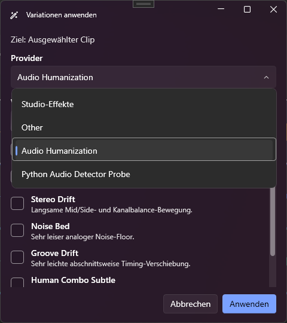
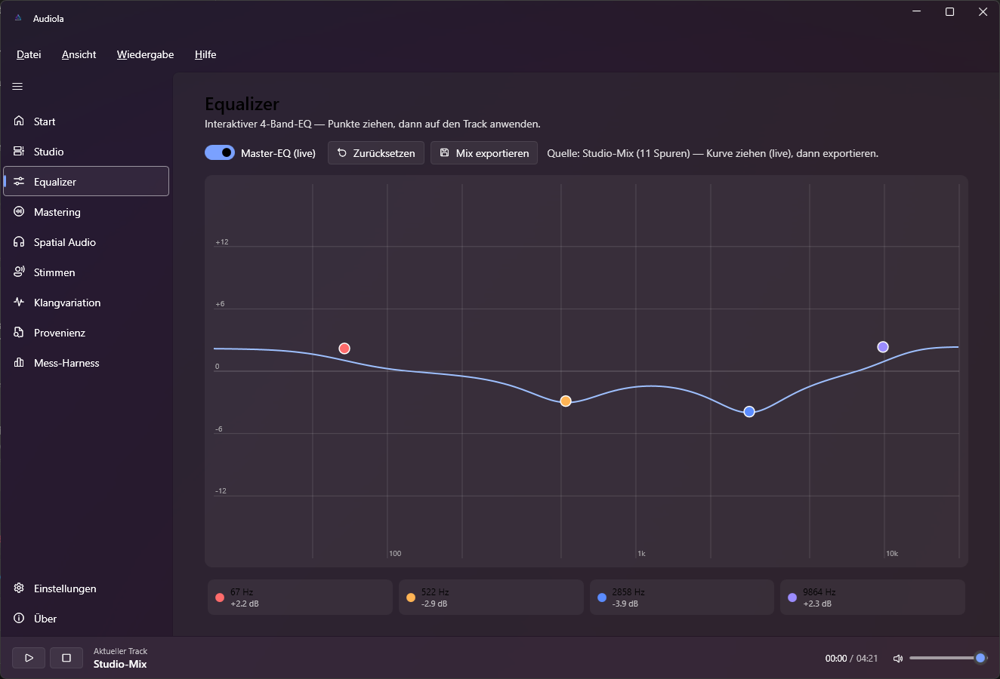
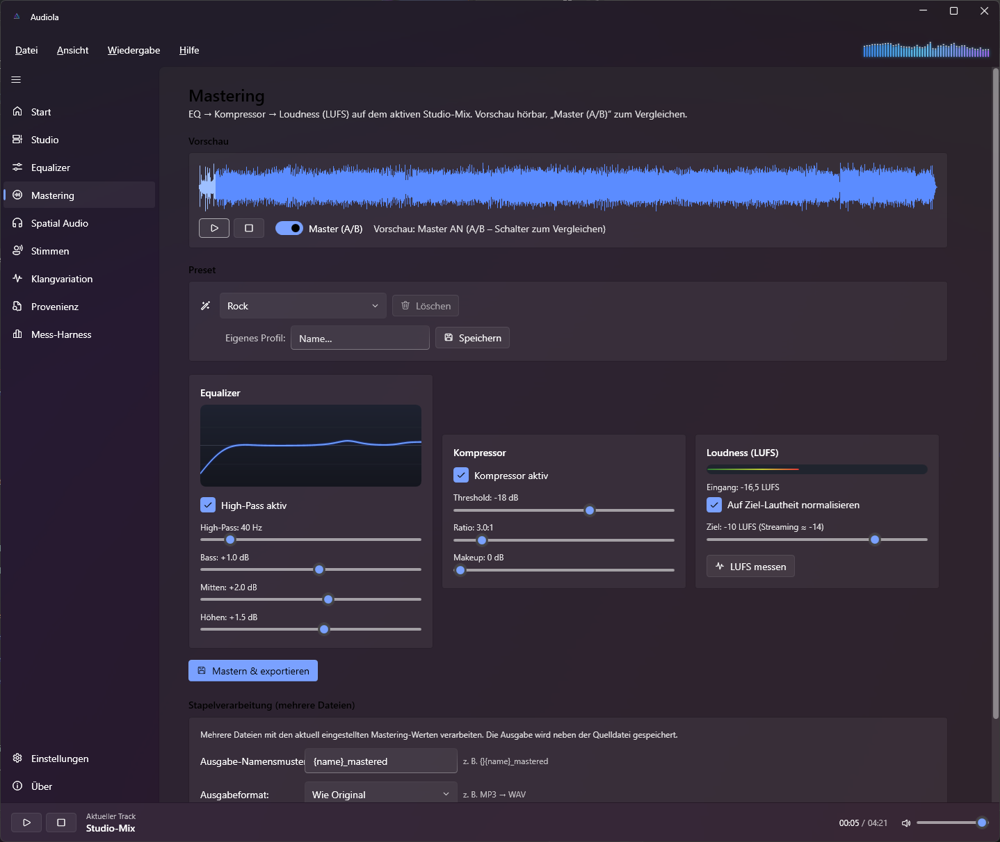
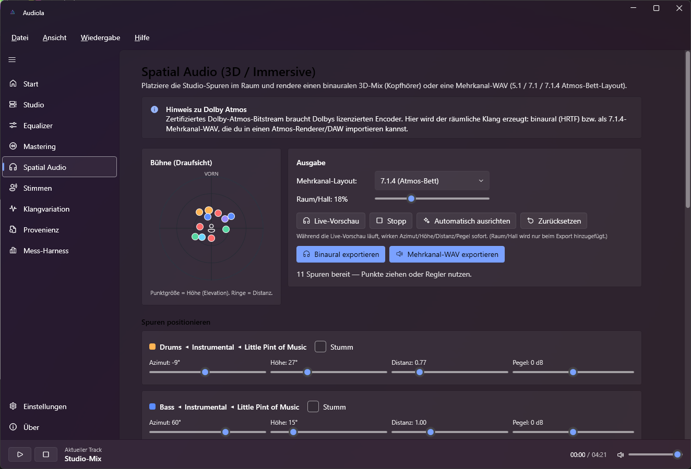
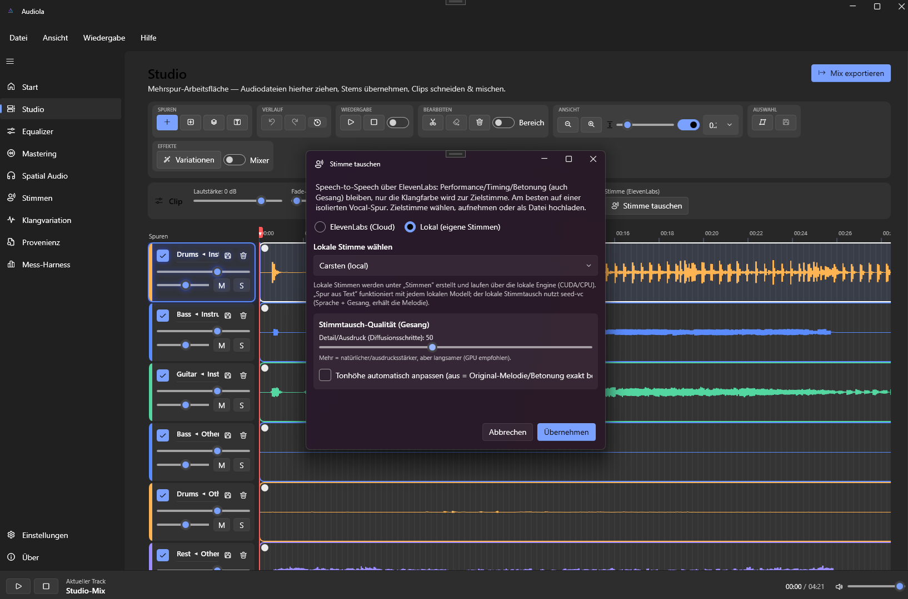
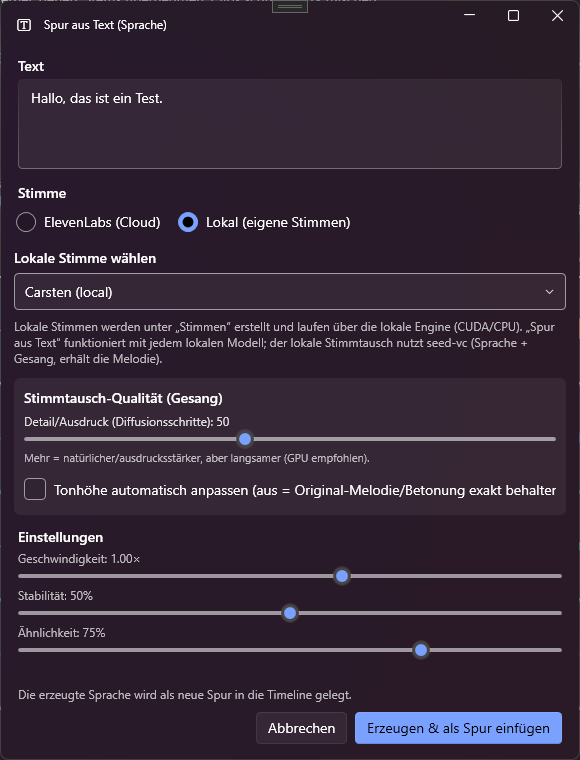

A modern Windows
audio studio.
Drag a song in, split it into stems, arrange on a multitrack timeline, swap or synthesize voices with local AI, master to broadcast loudness and export an immersive 3D mix — all in one app that sets up everything it needs.
One studio. Every stage of production.
From arranging clips to immersive mastering — Audiola brings the heavy parts of modern music production together in a single Fluent-design workspace.
Multitrack Studio
A timeline workspace: drag clips in, cut/trim, fades, snapping, zoom, per-track colors, a draggable playhead and a real-time spectrum in the header.
AI Stem Separation
Pull a song into vocals, drums, bass, guitar, piano and more — with Demucs and high-quality RoFormer models, added straight to the timeline.
Track Editor
A focused waveform editor: trim, silence, fades, normalize, echo, reverb, stereo widen, reverse and vocal cleanup — with live FX preview and undo.
Interactive EQ
A 4-band equalizer with draggable curve points and a live Master-EQ you can hear on the studio mix in real time.
Mastering
EQ → compressor → LUFS loudness chain (BS.1770 / EBU R128) with A/B preview, genre presets, custom profiles and batch processing.
Spatial Audio (3D)
Place tracks in 3D, then export binaural for headphones or multichannel WAV — 5.1, 7.1 and a 7.1.4 Atmos bed.
Voices: TTS & Swap
Local AI voices (Kokoro, Qwen3-TTS, XTTS v2, Chatterbox, seed-vc) plus ElevenLabs. Create voices, swap a clip's voice, add a track from text.
Transcription & Lyrics
Whisper or ElevenLabs transcription (tiny → large-v3, turbo) to time-synced LRC lyrics, with embedded lyrics metadata on export.
Metadata & Export
A full tag editor — title, artist, album, cover art and synced lyrics — embedded on export to WAV, MP3, M4A or FLAC, with an in-app preview.
Provenance Analysis
A read-only analyzer for C2PA content credentials, metadata and AI-generation markers. It reports — it never changes your audio.
Built for the whole mix.
Every feature, explained.
A multitrack timeline that gets out of your way
Drop audio files onto the timeline and arrange clips across as many tracks as you need. Everything is direct and tactile.
- Clip editing — split at the playhead, trim edges with snapping, cut regions, delete and drag clips between tracks.
- Per-clip volume and independent fade-in / fade-out handles drawn on the clip.
- Per-track volume, pan, mute, solo, rename, duplicate and a custom accent color.
- Timeline tools — zoom, adjustable lane height, a snapping grid, a draggable playhead with auto-scroll and looped selection.
- Real-time spectrum visualizer in the header, a live Master-EQ, and one-click Export Mix.

Pull a song apart, instrument by instrument
Separate any track into its components and drop the results straight back onto the timeline.
- Demucs —
htdemucs,htdemucs_ft,htdemucs_6sandmdxmodels, with optional quality shifts. - High-quality models via audio-separator — BS-RoFormer, Mel-Band RoFormer (karaoke / lead vs. background) and 6-stem Demucs.
- Stems — vocals, drums, bass, guitar, piano and other.
- Smart auto mode runs a 6-stem split with content detection and drops near-silent stems automatically.

A focused waveform editor with live preview
Double-click a clip to open a large waveform editor for precise, non-destructive edits.
- Edits — trim, delete, silence and linear fade in / out.
- Effects — normalize, echo, reverb, stereo widen, reverse and one-click vocal cleanup (de-esser, harshness taming, gentle compression).
- Live FX preview for echo, reverb and stereo widen while you listen.
- Undo and per-edit export to WAV / MP3 / M4A.

An interactive 4-band EQ on your mix
Shape the tone with draggable bands and hear the result live.
- 4 bands — low-shelf @ 100 Hz, peaking @ 500 Hz, peaking @ 3 kHz, high-shelf @ 10 kHz.
- Live Master-EQ applied to the studio mix as you adjust.
- Export the EQ-processed mix or a single track.

Broadcast-grade loudness, the easy way
A professional chain runs over your studio mix, with metering that matches streaming standards.
- Chain — EQ → compressor → loudness normalization.
- LUFS metering — ITU-R BS.1770 / EBU R128 integrated loudness.
- A/B preview between original and mastered signal.
- Genre presets (Streaming −14 LUFS, Pop, Rock, Podcast, EDM, Lo-Fi…) plus your own custom profiles.
- Batch mastering of many files with output-format conversion (e.g. MP3 → WAV).

Position your mix in three dimensions
Place each studio track in 3D space on a top-down radar, then render an immersive mix.
- Position by azimuth, elevation, distance and level, with live preview.
- Auto-arrange places common track types intelligently.
- Binaural (HRTF) export for headphones with ITD/ILD and head-shadow modelling.
- Multichannel WAV — 5.1, 7.1 and a 7.1.4 Atmos bed (WAVE_FORMAT_EXTENSIBLE channel masks).

Local & cloud voices — synthesize and swap
A full voice toolkit, with local AI models the app downloads and runs for you.
- Local models — Kokoro, Qwen3-TTS, Coqui XTTS v2, Chatterbox and seed-vc, downloaded with one click.
- Create voices by recording from your mic or uploading a sample.
- Swap a clip's voice locally with seed-vc (keeps timing & emphasis — works for singing) or via ElevenLabs.
- Add a track from text with the same voice picker.
- Device selection (auto / CUDA / CPU / DirectML) with a GPU check and an Install CUDA Torch button.

See it in action
A dark Fluent (Mica) interface with a frequency-gradient accent.

Up and running in minutes
Download the installer and let Audiola provision the rest.
Install
Download Audiola-win-Setup.exe from the latest release and run it. The app keeps itself up to date via Velopack.
Open a song
Drag an audio file onto the window, or open the multitrack Studio and start arranging clips on the timeline.
Let AI provision itself
Pick a feature — stem separation, voices, transcription — and Audiola downloads the model into its own managed Python environment. No manual setup.
Build from source
Requires the .NET 10 SDK on Windows.
git clone https://github.com/fgilde/Audiola.git cd Audiola dotnet run --project src/Audiola/Audiola.csproj
Ready to produce?
Download Audiola for Windows and start arranging, separating, mastering and rendering in 3D today.
Audiola uses components from these open-source projects.